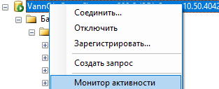
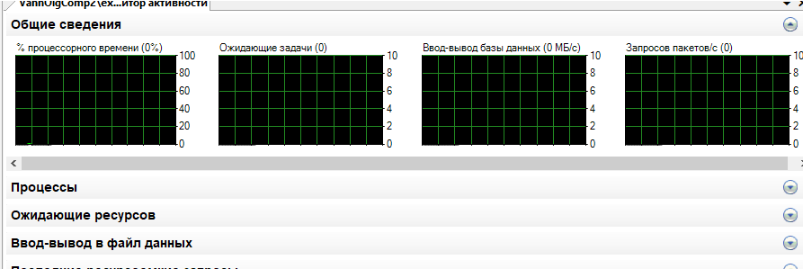

ПРАКТИЧЕСКАЯ РАБОТА №14. МОНИТОРИНГ НАГРУЗКИ СЕРВЕРА
1. ЦЕЛЬ И ЗАДАЧИ РАБОТЫ
Целью работы является получение практических навыков отслеживания работы сервера MS SQL Server.
Для достижения цели работы необходимо решить следующие задачи:
изучить средств мониторинга Activity monitor, Denali Activity Monitor;
ознакомиться с использованием системных процедур sp_who и sp_who2.
2. КРАТКИЕ ТЕОРЕТИЧЕСКИЕ СВЕДЕНИЯ
Мониторинг экземпляров SQL Server и баз данных позволяет получить информацию, необходимую для диагностики и устранения неполадок производительности SQL Server, а также для тонкой настройки SQL Server.
Для нормального функционирования SQL Server, администратор баз данных должен постоянно следить за производительностью, иметь набор метрик, которые оперативно могут сообщить о деградации в работе системы. Вовремя получать уведомления, когда текущая нагрузка на сервер выходит за рамки базовых показателей системы, и принять адекватные меры.
Activity Monitor отслеживает наиболее важные показатели эффективности SQL Server. Чтобы получить их, он выполняет запросы к экземпляру SQL Server каждые 10 секунд. Мониторинг осуществляется только когда инструмент открыт, поэтому побочный эффект от его использования минимальный.
Все метрики показаны на 5 разных панелях: Overview (Обзор), Processes (Процессы), Resource Waits (Ожидания ресурсов), Data File I/O (Ввод/вывод файлов данных), и Recent Expensive Queries (последние затратные запросы).
Overview (Общие сведения). Содержит графики Processor Time (Процессорное время), Number of Waiting Tasks (Количество ожидающих задач), Database I/O (Ввод-вывод в базе данных) и Number of Batch Requests/second (Количество пакетных запросов в секунду).
Activity Monitor можно открыть в SQL Server Management Studio toolbar используя иконку Activity Monitor на панели, сочетанием клавиш Ctrl+Alt+A или через контекстное меню в Object Explorer.

Рис.14.1 Запуск Activity Monitor

Рис.14.2 Окно монитора активности
Как уже было сказано выше, Activity Monitor отслеживает только заранее определенный набор наиболее важных показателей производительности SQL Server. Дополнительных параметров указать нельзя, нельзя и удалить что-то из показателей. Мониторинг возможен только в режиме реального времени. Нет возможности сохранить результаты мониторинга для последующего анализа. Таким образом Activity Monitor – это полезный инструмент для беглого анализа и поиска неисправностей, но он не подходит для детального сбора информации, т. к. в нѐм отсутствует возможность гибкой настройки счетчиков производительности, указания пороговых значений и нет возможности сбора исторических данных.
Системная процедура sp_who.
Предоставляет сведения о текущих пользователях, сеансах и процессов в экземпляре Microsoft Компонент SQL Server Database Engine. Данные могут быть отфильтрованы, чтобы возвращать только те процессы, которые не простаивают, принадлежат конкретному пользователю или принадлежат определенному сеансу.
Общий формат запуска процедуры
sp_who[[@loginame=]«login»| sessionID| «ACTIVE»]
Аргументы
[@loginame=]«login» – определяет процессы, принадлежа-щие конкретному имени входа.
SessionID – идентификатор сеанса является идентификационным номером сеанса, принадлежащего SQL Server экземпляра.
«ACTIVE» – исключает сеансы, ожидающие следующей команды от пользователя.
Если значение не указано, эта процедура возвращает все сеансы, принадлежащие экземпляру.
Пример использования:
EXECsp_who«10»--specifiestheprocess_id;
У хранимой процедуры sp_who есть недокументированный вариант – sp_who2. Эта хранимая процедура запускается на выполнение точно так же, но возвращает более подробную информацию.
3. ПОРЯДОК ВЫПОЛНЕНИЯ РАБОТЫ
1. Запустить мониторинг активности.
2. Выявить выполняемые процессы, время ожидания ресурсов и другие отображаемые параметры.
3. Запустить процедуру «sp_who»:
- без параметров;
- с параметром указывающим на конкретное имя входа;
- с параметром, указывающим на идентификатор процесса.
4. Аналогично выполнить запуск процедуры «sp_who2».
5. Задокументировать работу процедур в виде отчѐта.
4. КОНТРОЛЬНЫЕ ВОПРОСЫ
1. Что собой представляет процесс мониторинга, какие его задачи?
2. Какие средства мониторинга рассматриваются в этой работе?
3. Какие показатели работы сервера позволяет получать Activity Monitor?
4. Как запускается Activity Monitor?
5. Какие показатели работы позволяют получать хранимые процедуры «sp_who», «sp_who2»?
6. Какие параметры запуска могут быть использованы для данных процедур?